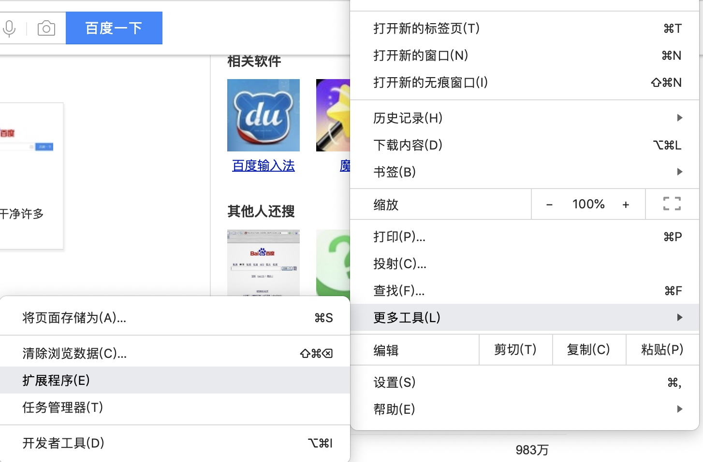
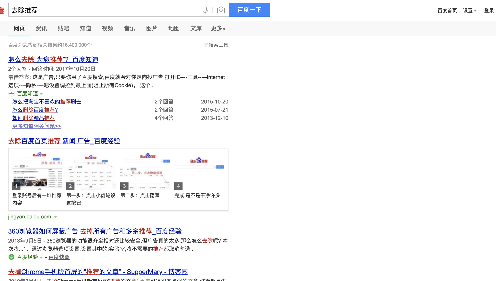

每次打开百度，我都会看到一堆广告。除此之外还有就是搜索热点经常诱惑我点开，耽误我学习～～～
为什么要做这个插件

如上图所示：是在是太恶心了，让我感觉很郁闷。于是萌生了编写一个去除推荐的插件的想法。
谷歌插件入门
Chrome插件没有严格的项目结构要求，只要保证本目录有一个manifest.json即可，也不需要专门的IDE，普通的web开发工具即可。
从右上角菜单->更多工具->扩展程序可以进入 插件管理页面，也可以直接在地址栏输入 chrome://extensions 访问。

勾选开发者模式即可以文件夹的形式直接加载插件，否则只能安装.crx格式的文件。Chrome要求插件必须从它的Chrome应用商店安装，其它任何网站下载的都无法直接安装，所以，其实我们可以把crx文件解压，然后通过开发者模式直接加载。
开发中，代码有任何改动都必须重新加载插件，只需要在插件管理页按下Ctrl+R即可，以防万一最好还把页面刷新一下。
基础知识
manifest.json
这是一个Chrome插件最重要也是必不可少的文件，用来配置所有和插件相关的配置，必须放在根目录。其中，manifest_version、name、version3个是必不可少的，description和icons是推荐的。
下面给出的是一些常见的配置项，均有中文注释。
{
// 清单文件的版本，这个必须写，而且必须是2
"manifest_version": 2,
// 插件的名称
"name": "demo",
// 插件的版本
"version": "1.0.0",
// 插件描述
"description": "简单的Chrome扩展demo",
// 图标，一般偷懒全部用一个尺寸的也没问题
"icons":
{
"16": "img/icon.png",
"48": "img/icon.png",
"128": "img/icon.png"
},
// 会一直常驻的后台JS或后台页面
"background":
{
// 2种指定方式，如果指定JS，那么会自动生成一个背景页
"page": "background.html"
//"scripts": ["js/background.js"]
},
// 浏览器右上角图标设置，browser_action、page_action、app必须三选一
"browser_action":
{
"default_icon": "img/icon.png",
// 图标悬停时的标题，可选
"default_title": "这是一个示例Chrome插件",
"default_popup": "popup.html"
},
// 当某些特定页面打开才显示的图标
/*"page_action":
{
"default_icon": "img/icon.png",
"default_title": "我是pageAction",
"default_popup": "popup.html"
},*/
// 需要直接注入页面的JS
"content_scripts":
[
{
//"matches": ["http://*/*", "https://*/*"],
// "<all_urls>" 表示匹配所有地址
"matches": ["<all_urls>"],
// 多个JS按顺序注入
"js": ["js/jquery-1.8.3.js", "js/content-script.js"],
// JS的注入可以随便一点，但是CSS的注意就要千万小心了，因为一不小心就可能影响全局样式
"css": ["css/custom.css"],
// 代码注入的时间，可选值： "document_start", "document_end", or "document_idle"，最后一个表示页面空闲时，默认document_idle
"run_at": "document_start"
},
// 这里仅仅是为了演示content-script可以配置多个规则
{
"matches": ["*://*/*.png", "*://*/*.jpg", "*://*/*.gif", "*://*/*.bmp"],
"js": ["js/show-image-content-size.js"]
}
],
// 权限申请
"permissions":
[
"contextMenus", // 右键菜单
"tabs", // 标签
"notifications", // 通知
"webRequest", // web请求
"webRequestBlocking",
"storage", // 插件本地存储
"http://*/*", // 可以通过executeScript或者insertCSS访问的网站
"https://*/*" // 可以通过executeScript或者insertCSS访问的网站
],
// 普通页面能够直接访问的插件资源列表，如果不设置是无法直接访问的
"web_accessible_resources": ["js/inject.js"],
// 插件主页，这个很重要，不要浪费了这个免费广告位
"homepage_url": "https://www.baidu.com",
// 覆盖浏览器默认页面
"chrome_url_overrides":
{
// 覆盖浏览器默认的新标签页
"newtab": "newtab.html"
},
// Chrome40以前的插件配置页写法
"options_page": "options.html",
// Chrome40以后的插件配置页写法，如果2个都写，新版Chrome只认后面这一个
"options_ui":
{
"page": "options.html",
// 添加一些默认的样式，推荐使用
"chrome_style": true
},
// 向地址栏注册一个关键字以提供搜索建议，只能设置一个关键字
"omnibox": { "keyword" : "go" },
// 默认语言
"default_locale": "zh_CN",
// devtools页面入口，注意只能指向一个HTML文件，不能是JS文件
"devtools_page": "devtools.html"
}
content-scripts
所谓content-scripts，其实就是Chrome插件中向页面注入脚本的一种形式（虽然名为script，其实还可以包括css的），借助content-scripts我们可以实现通过配置的方式轻松向指定页面注入JS和CSS（如果需要动态注入，可以参考下文），最常见的比如：广告屏蔽、页面CSS定制，等等。
示例配置：
{
// 需要直接注入页面的JS
"content_scripts":
[
{
//"matches": ["http://*/*", "https://*/*"],
// "<all_urls>" 表示匹配所有地址
"matches": ["<all_urls>"],
// 多个JS按顺序注入
"js": ["js/jquery-1.8.3.js", "js/content-script.js"],
// JS的注入可以随便一点，但是CSS的注意就要千万小心了，因为一不小心就可能影响全局样式
"css": ["css/custom.css"],
// 代码注入的时间，可选值： "document_start", "document_end", or "document_idle"，最后一个表示页面空闲时，默认document_idle
"run_at": "document_start"
}
],
}
特别注意，如果没有主动指定run_at为document_start（默认为document_idle），下面这种代码是不会生效的：
document.addEventListener('DOMContentLoaded', function()
{
console.log('我被执行了！');
});
content-scripts和原始页面共享DOM，但是不共享JS，如要访问页面JS（例如某个JS变量），只能通过injected js来实现。content-scripts不能访问绝大部分chrome.xxx.api，除了下面这4种：
- chrome.extension(getURL , inIncognitoContext , lastError , onRequest , sendRequest)
- chrome.i18n
- chrome.runtime(connect , getManifest , getURL , id , onConnect , onMessage , sendMessage)
- chrome.storage
其实看到这里不要悲观，这些API绝大部分时候都够用了，非要调用其它API的话，你还可以通过通信来实现让background来帮你调用（关于通信，后文有详细介绍）。
效果
